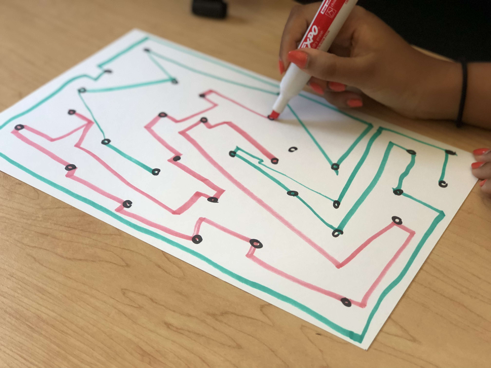
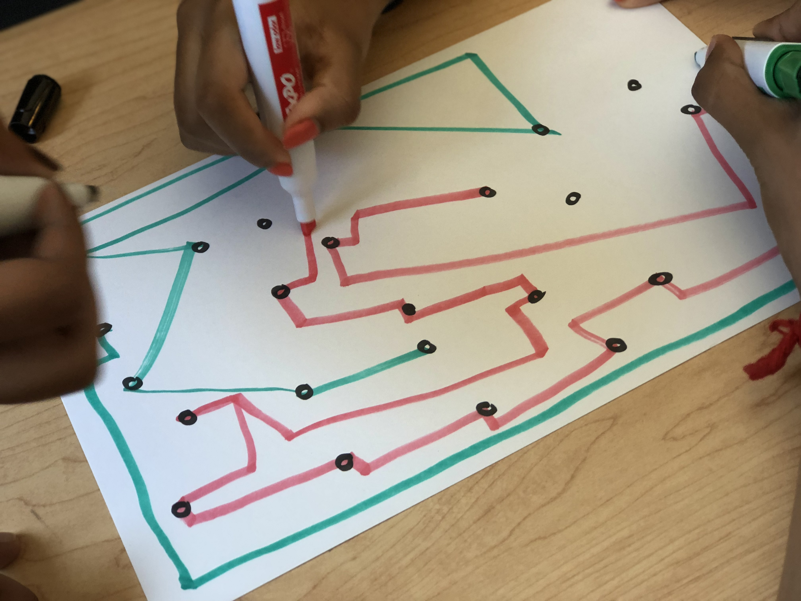
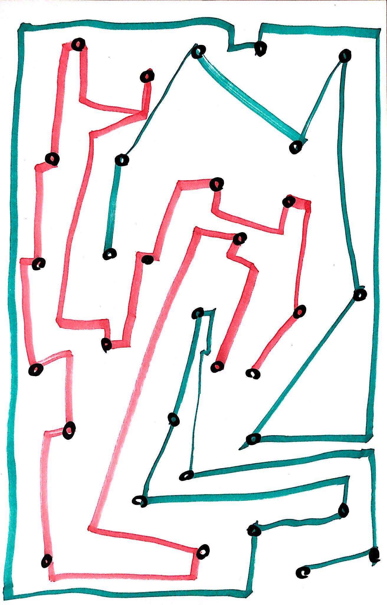
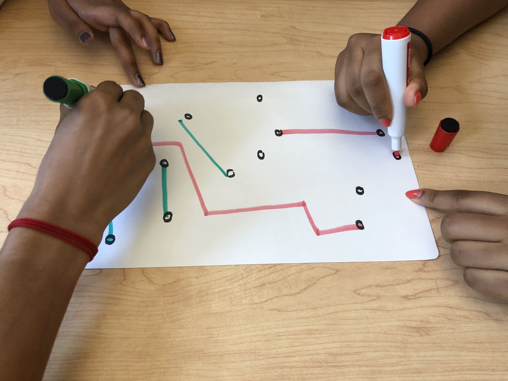
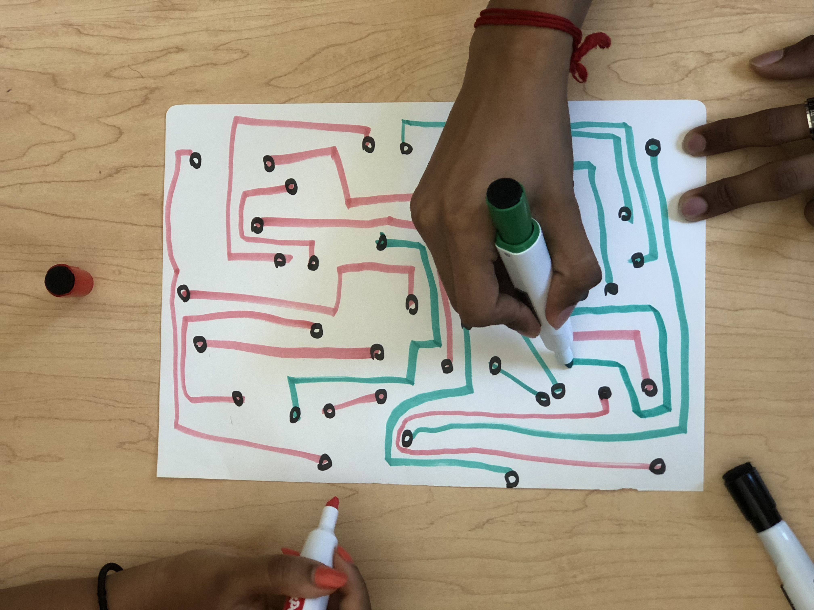
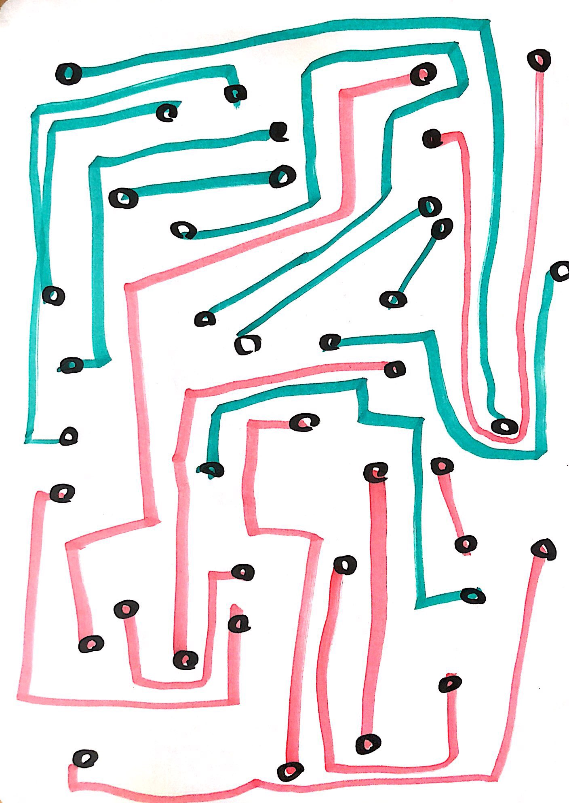

Conditional Design
Rules:
The exercise begins by one person drawing small circles all over the page.
The other two participants draw straight or angled lines to connect two circles.
The lines can only be drawn from the last circle that was connected by the individual players.
The lines cannot intersect or touch.
The game concludes once the page is filled and all the circles are connected.
Outcome:



Redifined Rules:
The exercise begins by one person drawing small circles all over the page.
The other two participants draw straight or angled lines to connect two circles.
The lines cannot intersect or touch.
The game concludes once the page is filled and all the circles are connected.
Outcome:


